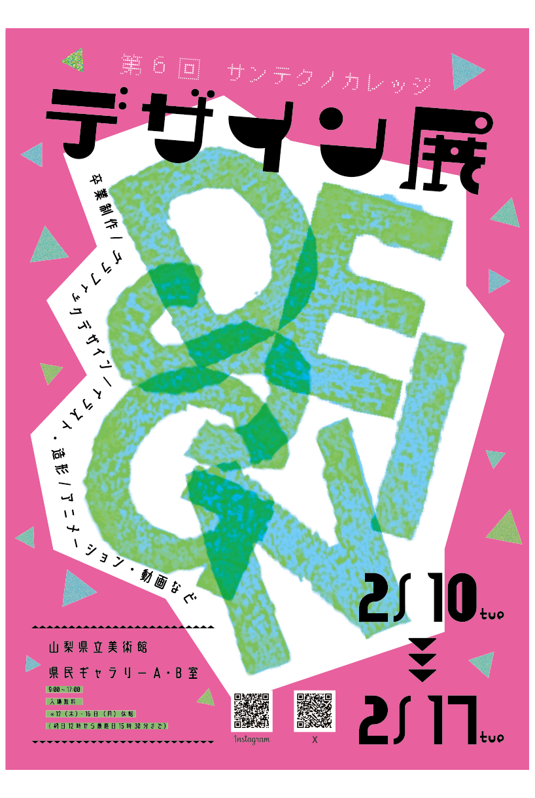
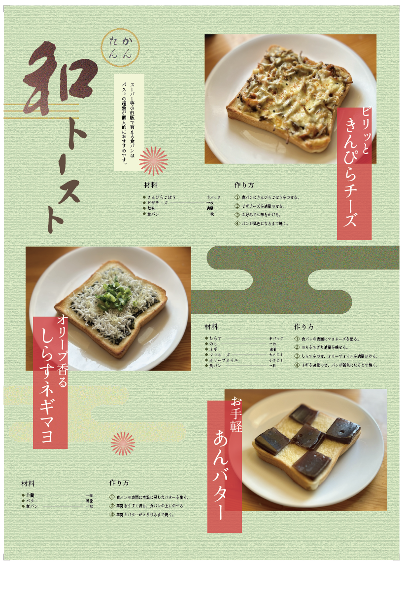
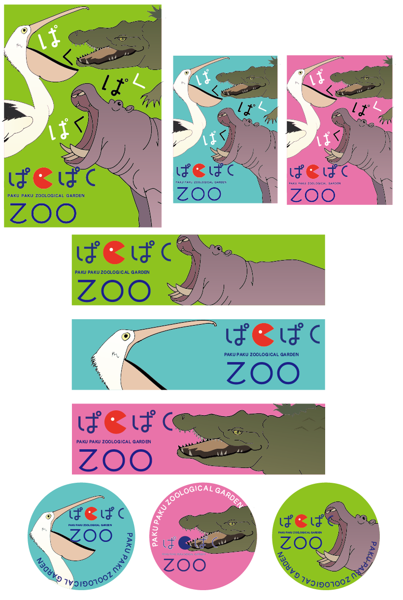

WORKS
作品
グラフィックデザイン
デザイン展 メイングラフィック

[制作期間] 3週間
[制作ソフト] Illustrator・Photoshop
第6回デザイン展を告知するポスターを制作しました。
手彫りのハンコを取り入れ、アナログならではの質感とデジタルの表現を融合させました。静止画でありながら動きを感じられるよう、要素の配置や重なりを工夫し、視線を引きつける躍動感のあるデザインを目指しました。
試行錯誤を重ねながら制作した経験を通して、表現方法を模索しながらデザインに向き合う姿勢を大きく成長させることができました。校内選考では優秀賞を受賞しました。
レシピリーフレット

[制作期間] 3週間
[制作ソフト] Illustrator・Photoshop
「和のトースト」をテーマに、3種類のオリジナルレシピを考案し、実際に調理した料理を撮影してデザインにまとめました。
料理がより美味しそうに見えるよう、写真の明るさや色味を調整し、パンの焼き色や具材の質感が引き立つように加工しました。
デザインには、えんじやきなりなどの和の落ち着いた色合いを取り入れ、背景にはちりめんを思わせる和紙風のテクスチャを使用しています。
写真と文字のバランスや余白にも配慮し、3種類のトーストそれぞれの魅力が引き立つよう、1枚のビジュアルとしてまとめています。
オリジナル動物園 ブランディング

[制作期間] 約1ヶ月
[制作ソフト] Illustrator・Photoshop
架空の動物園をテーマにしたグラフィック制作課題です。 まずは様々な動物をスケッチして観察した上で、口を大きく開ける動物たちに着目し、カバ・ペリカン・ワニの3種類をモチーフとして選定しました。それぞれの特徴を捉えながら、形をシンプルに整理し、動物の個性が伝わるシンボルとしてデザインしました。Illustratorのパスで描画しています。